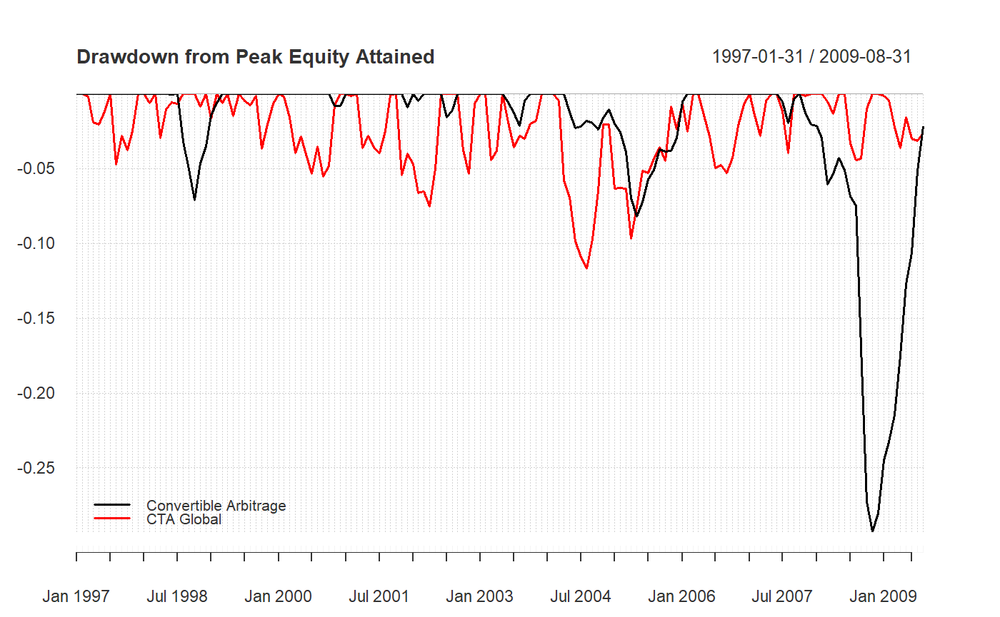

A time series chart demonstrating drawdowns from peak equity attained through time, calculated from periodic returns.
chart.Drawdown(R, geometric = TRUE, legend.loc = NULL, colorset = (1:12), ...)
| R | an xts, vector, matrix, data frame, timeSeries or zoo object of asset returns |
|---|---|
| geometric | utilize geometric chaining (TRUE) or simple/arithmetic chaining (FALSE) to aggregate returns, default TRUE |
| legend.loc | places a legend into one of nine locations on the chart: bottomright, bottom, bottomleft, left, topleft, top, topright, right, or center. |
| colorset | color palette to use, set by default to rational choices |
| … | any other passthru parameters |
Any time the cumulative returns dips below the maximum cumulative returns, it's a drawdown. Drawdowns are measured as a percentage of that maximum cumulative return, in effect, measured from peak equity.
Bacon, C. Practical Portfolio Performance Measurement and Attribution. Wiley. 2004. p. 88
plot
chart.TimeSeries
findDrawdowns
sortDrawdowns
maxDrawdown
table.Drawdowns
table.DownsideRisk
data(edhec) chart.Drawdown(edhec[,c(1,2)], main="Drawdown from Peak Equity Attained", legend.loc="bottomleft")